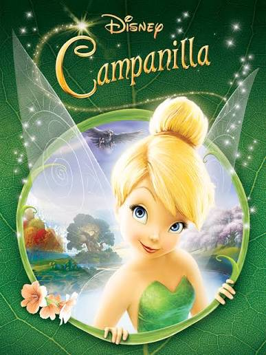

P003Campanilla
Campanilla llega a la Hondonada de las Hadas y descubre que su talento es ser hada artesana, aunque intentará cambiar su destino para poder viajar al mundo exterior con sus amigas.
Reparto:
- Mae Whitman
- Kristin Chenoweth
- Raven-Symoné